flowchart TD
raw["raw-data/"]
subgraph script["data-prep.R"]
p1["Content Metrics Processing"]
p2["All Posts Processing"]
p3["New Followers Processing"]
end
subgraph clean["clean-data/"]
c1["content-overview.csv"]
c2["content_posts-overview.csv"]
c3["new-followers.csv"]
end
raw --> p1
raw --> p2
raw --> p3
p1 --> c1
p2 --> c2
p3 --> c3
c1 & c2 & c3 --> analysis["analysis.qmd"]
style raw fill:#e1f5ff
style script fill:#fff4e1
style clean fill:#e8f5e9
GHE on LinkedIn
While statistics can be fetched from LinkedIn either via their API or manually from the overview page, their scope is limited. Statistics are only available for a rolling 12-month window. This means data must be collected at regular intervals to avoid gaps.
Data Processing Pipeline
We download our analytics data manually from LinkedIn roughly every three months. On the group dashboard (admin rights required), there are three tabs: “Content”, “Visitors”, and “Followers”. These datasets serve as the source for our metadata and are stored in raw-data. Due to the historical limits mentioned above, we continuously append the latest data to the existing dataset.
This README must be rendered with the following command in your terminal: quarto render analysis.qmd --to gfm --output README.md
Followers
Display code
followers |>
ggplot(aes(x = date, y = cumulative_followers)) +
geom_line() +
labs(
x = "",
y = "Followers\n"
) +
theme_few()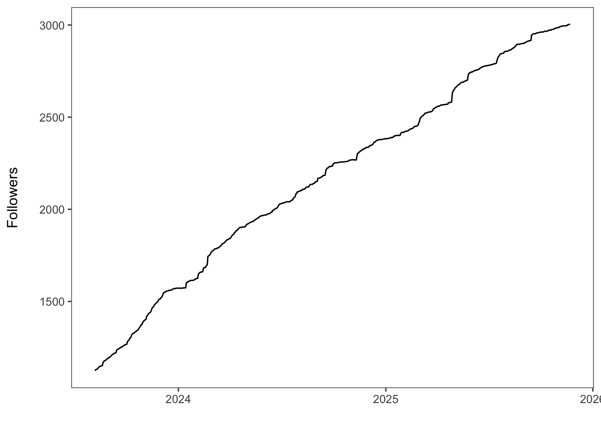
Content
Impressions
Display code
# impressions over time
content_overview %>%
group_by(month = floor_date(date, "week")) %>%
summarise(
sum_value = sum(impressions, na.rm = TRUE),
mean_value = mean(impressions, na.rm = TRUE),
.groups = "drop"
) |>
ggplot(aes(x = month, y = sum_value)) +
geom_smooth() +
geom_col() +
labs(
x = "",
y = "Impressions\n"
) +
theme_few()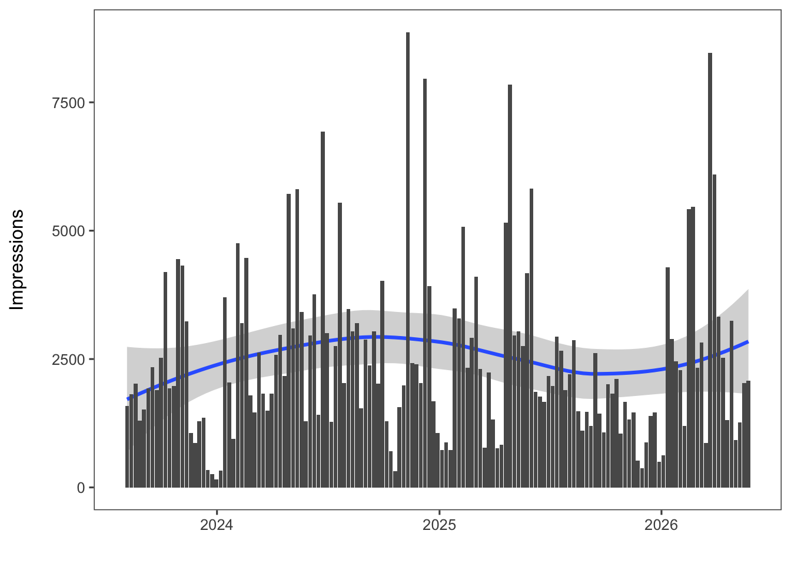
Likes
Display code
content_posts %>%
group_by(week = floor_date(date, "week")) %>%
summarise(
sum_value = sum(likes, na.rm = TRUE),
mean_value = mean(likes, na.rm = TRUE),
.groups = "drop"
) |>
ggplot(aes(x = week, y = sum_value)) +
geom_smooth() +
geom_col() +
labs(
x = "",
y = "Likes\n"
) +
theme_few()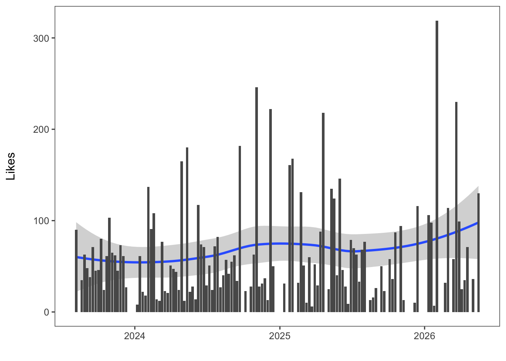
Likes per impression
Display code
content_posts |>
group_by(week = floor_date(date, "week")) %>%
summarise(
sum_likes = sum(likes, na.rm = TRUE),
sum_impressions = sum(impressions, na.rm = TRUE),
.groups = "drop"
) |>
mutate(likes_per_impression = sum_likes/sum_impressions) |>
ggplot(aes(x = week, y = likes_per_impression)) +
geom_col() +
geom_smooth() +
labs(
x = "",
y = "Likes per impression\n"
) +
theme_few()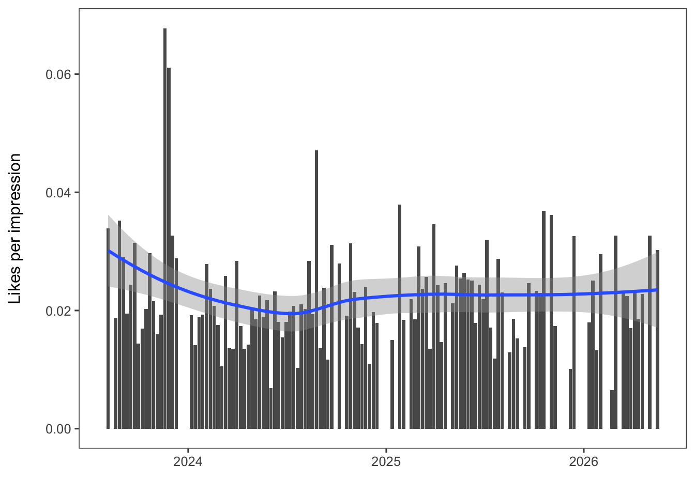
Number of posts
Display code
mean_n_posts <- content_posts %>%
group_by(month = floor_date(date, "month")) %>%
count() |>
ungroup() |>
summarise(mean_posts = mean(n)) |>
pull()
content_posts %>%
group_by(month = floor_date(date, "month")) %>%
count() |>
ggplot(aes(x = month, y = n)) +
geom_col() +
geom_hline(yintercept = mean_n_posts, color = "red", linetype = "dotted") +
labs(
x = "",
y = "Number of posts per month\n"
) +
theme_few()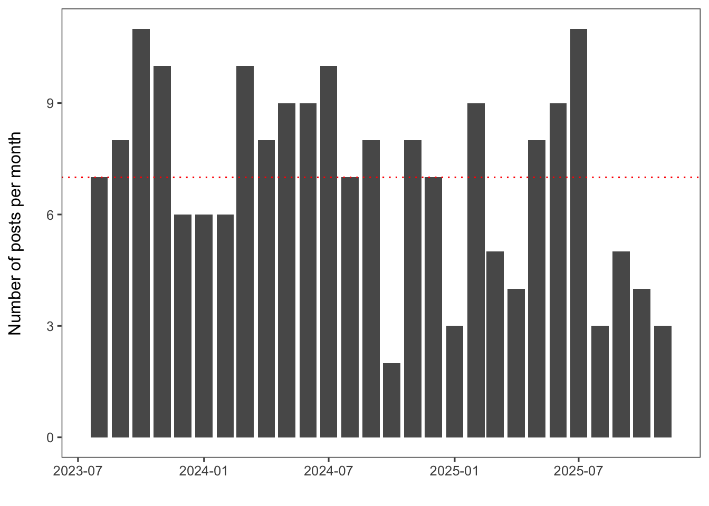
Impressions per post
Display code
content_posts %>%
group_by(week = floor_date(date, "week")) %>%
summarise(n_posts = n(),
impression = sum(impressions, na.rm = TRUE)) |>
mutate(impressions_per_post = impression/n_posts) |>
ggplot(aes(x = week, y = impressions_per_post)) +
geom_smooth() +
geom_col() +
labs(x = "",
y = "Impressions per post\n") +
theme_few()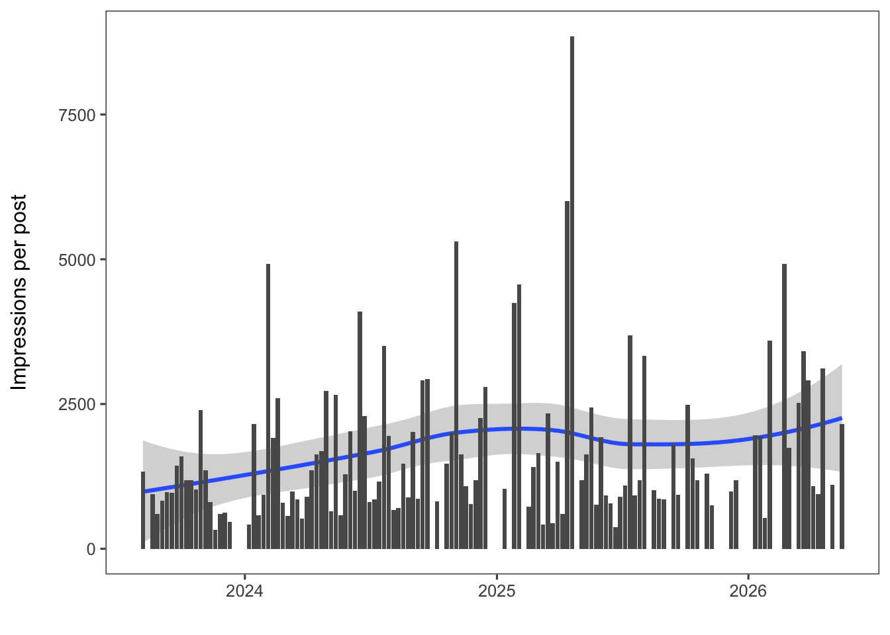
Impressions and Followers
Display code
followers_week <- followers |>
mutate(week = floor_date(date, unit = "week", week_start = 1)) |>
group_by(week) |>
slice_max(cumulative_followers) |>
distinct(week, .keep_all = TRUE) |>
select(week, cumulative_followers)
content_week <- content_overview |>
mutate(week = floor_date(date, unit = "week", week_start = 1)) |>
group_by(week) |>
summarise(total_impressions = sum(impressions))
merge_week <- followers_week |>
left_join(content_week)
merge_week |>
ggplot() +
geom_col(data = content_week, aes(x = week, y = total_impressions)) +
geom_point(data = followers_week, aes(x = week, y = cumulative_followers), color = "red") +
labs(x = "",
y = "Weekly Impressions\n") +
theme_few()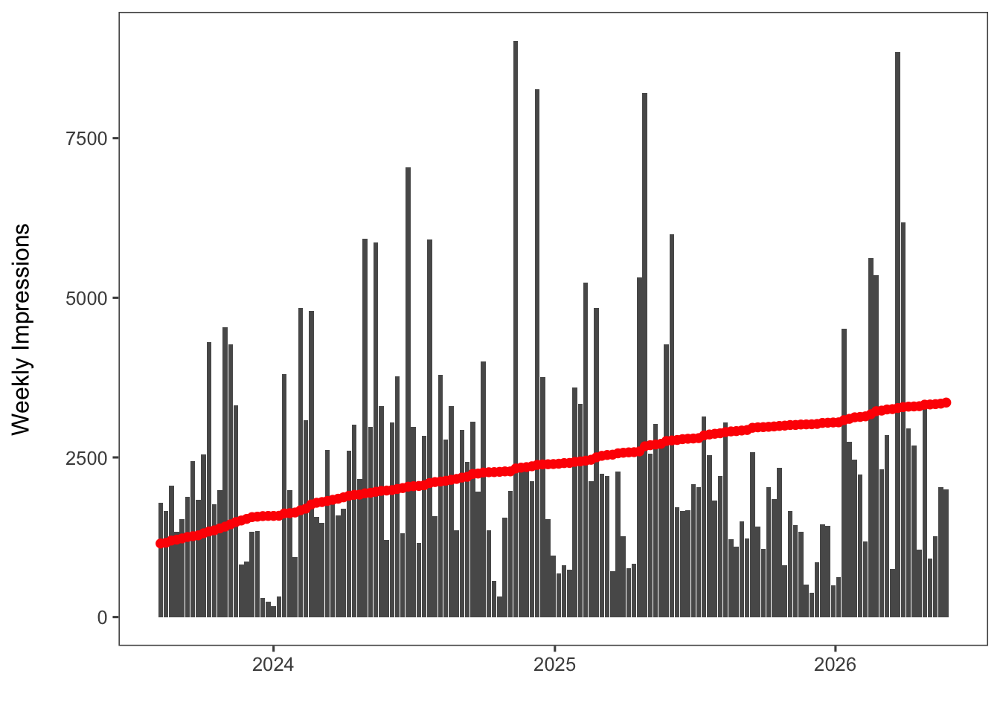
Display code
cor_data <- merge_week |>
drop_na()
cor(cor_data$cumulative_followers, cor_data$total_impressions)[1] 0.0176599Deep dive on high performing weeks
Display code
impressions_deepdive <- content_overview |>
mutate(week = floor_date(date, unit = "week", week_start = 1)) |>
group_by(week) |>
mutate(total_impressions = sum(impressions)) |>
filter(total_impressions > 7000)Display code
content_overview |>
ggplot(aes(x = impressions, y = likes)) +
geom_point() +
geom_smooth(method = "lm") +
theme_few()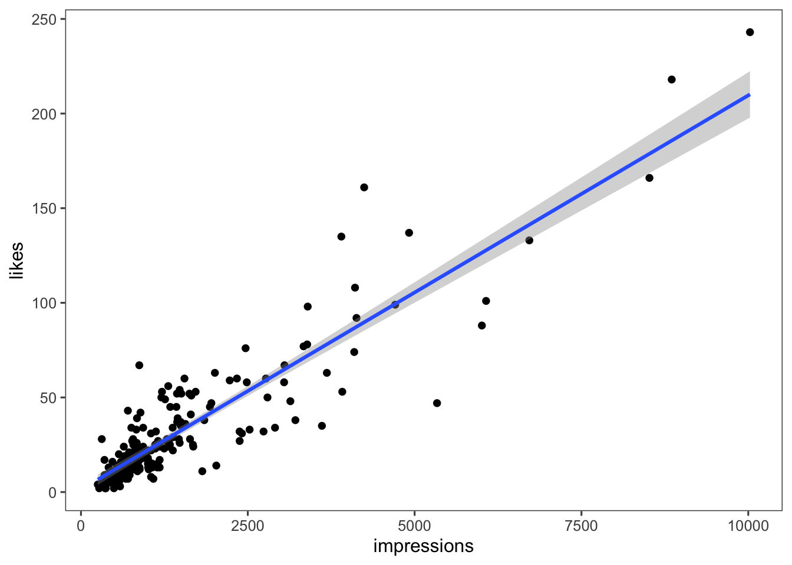
Display code
cor(content_overview$impressions, content_overview$likes)[1] 0.9014156Display code
content_overview_less7k <- content_overview |>
filter(impressions < 7000)
content_overview_less7k |>
ggplot(aes(x = impressions, y = likes)) +
geom_point() +
geom_smooth(method = "lm") +
theme_few()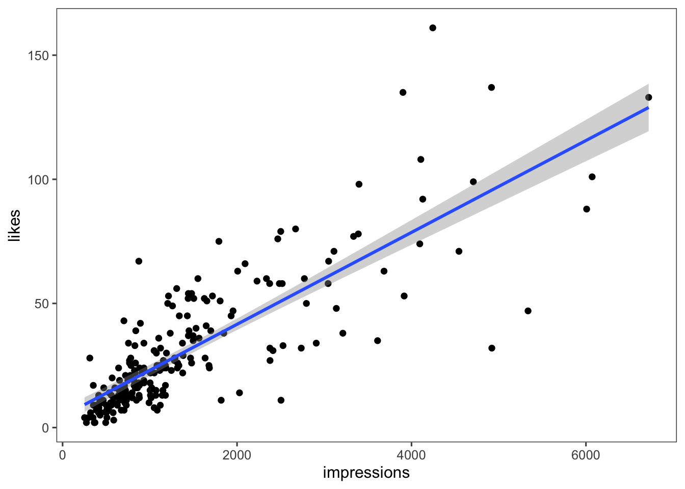
Display code
cor(content_overview_less7k$impressions, content_overview_less7k$likes)[1] 0.8381605Display code
paste0("Correlation Impressions / Likes: ", cor(content_overview$impressions, content_overview$likes))[1] "Correlation Impressions / Likes: 0.901415584317637"Display code
paste0("Correlation Impressions / Comments: ", cor(content_overview$impressions, content_overview$comments))[1] "Correlation Impressions / Comments: 0.586045102140429"Display code
paste0("Correlation Impressions / Reposts: ", cor(content_overview$impressions, content_overview$reposts))[1] "Correlation Impressions / Reposts: 0.295505535482378"Display code
paste0("Correlation Impressions / Clicks: ", cor(content_overview$impressions, content_overview$clicks))[1] "Correlation Impressions / Clicks: 0.495775047657895"Display code
paste0("Correlation Impressions / Engagement Rate: ", cor(content_overview$impressions, content_overview$engagement_rate))[1] "Correlation Impressions / Engagement Rate: 0.142885611850119"Top 5: Likes
Display code
# filter top 10 posts according to likes
content_posts |>
slice_max(likes, n = 5) |>
select(post_title, likes) |>
knitr::kable(format = "html")| post_title | likes |
|---|---|
| We're excited to host Hope kelvin Chilunga at our group for the next six weeks! 🚀 During his stay, he will write his ETH for Development - ETH4D PhD proposal, focusing on how remote sensing can be leveraged to detect burning waste sites and their emissions. Hope holds a Master in 🤖 and Artificial Intelligence, is a lecturer at Malawi University of Business and Applied Sciences- MUBAS and runs his own drone company in Malawi 🇲🇼. Make sure to catch him while he's here to share his insights on the latest advancements in drone technology or to discuss future collaborations! 🤝 | 243 |
| 🎉 We are pleased to welcome a new PhD researcher to the Global Health Engineering (GHE) group at ETH Zurich! 🎉 Hope kelvin Chilunga has been awarded the ETH for Development - ETH4D Scholarship and will be starting a PhD at ETH Zürich, joining our Global Health Engineering group. Hope’s PhD research will focus on large-scale monitoring of open waste burning in Malawi, capturing the extent of open fires and their seasonal variation, to generate critical evidence for addressing environmental pollution and public health challenges in low-resource settings through innovative engineering approaches. We look forward to the valuable contributions Hope will bring to the GHE community and to advancing impactful, interdisciplinary research together. Welcome to ETH Zurich and to the GHE group! 🌍✨ 📎 Learn more about Hope's research: https://lnkd.in/ewsfi922 #EnvironmentalHealth #Malawi | 223 |
| 🎉🎉 We’re pleased to introduce Padraic Casserly, our new PhD student! 🎉🎉 Padraic is an experienced global health engineer, with years of experience implementing developmental projects in Sub-Saharan Africa. For his research he will work with partners in Malawi 🇲🇼 to optimize low-cost biogas systems 🔥 and deliver renewable energy ♻️ and sanitation solutions 🚽, directly contributing to Switzerland's carbon reduction and international development goals ✅ | 218 |
| 🥳 Congratulations to Saloni Vijay for successfully defending her doctoral thesis last week! It was a big day for everyone as Saloni will be leaving to start her postdoc at Imperial College London, she was GHE's first PhD to graduate, and we were honoured to host Prof. Julian Marshall as an external examiner 🥳 | 188 |
| Master student Teymour D'Andrea is working to build better, cheaper, stronger toilets in South Africa with Antoinette van der Merwe and the NGO Nova Institute NPC. We are grateful to funding from ETH for Development - ETH4D. | 166 |
Top 5: Reposts
Display code
# filter top 10 posts according to likes
content_posts |>
slice_max(reposts, n = 5) |>
select(post_title, reposts) |>
knitr::kable(format = "html")| post_title | reposts |
|---|---|
| 🎓✨ Free 9-Week Data Science Programme – 💧🧑💻 Data Science for openwashdata - 002 is here! We're doing it again! Two years after our first iteration, we're running the "data science for openwashdata" course again. The course content will largely stay the same with a few distinct differences: - We will provide recordings of the live lectures, but expect you to complete a new homework quiz within two weeks after the lecture. - We will teach the bonus module: "Use of AI for coding support". - We are starting a mentorship programme for increased learning and support. - We offer language support for Spanish speakers. 🚀 You can't wait? Sign-up here (it will take you 15 minutes): https://lnkd.in/dzArwqMk 📚 You need more info? Find the course website here: https://lnkd.in/d76Nf9Tb 📊 You're interested in some statistics from the first iteration? Read Adriana Clavijo Daza's blog post: https://lnkd.in/dkhJ6bUi #openwashdata #WASH | 25 |
| 🎓 openwashdata news 03 - academy 🎓 Are you a WASH professional? Do you want to learn data science with R? 📊 Then, sign up for our first "data science for openwashdata" course: https://lnkd.in/eA4jk8kS This is course is free and hosted on Zoom. We will meet 10 modules over 15 weeks. You will learn how to use R for your own data, and publish your results as stand-alone website to share it with the world. Learn more in our 3rd newsletter issue: https://lnkd.in/eM-crJ_e Your course instructors Lars Schöbitz and Mian Zhong are looking forward to meet you. | 18 |
| 🚨 Job Alert 🚨 Do you love working with data? Do you love working with people that work with data? Then apply for our positions and become a data steward in Malawi or South Africa. Find job adverts here: - Malawi 🇲🇼 BASEflow Limited -> apply: https://lnkd.in/dbThYRnH - SouthAfrica 🇿🇦 University of KwaZulu-Natal WASH R&D Centre -> apply: https://lnkd.in/dw6djpEv You will be part of Phase 2 of our #openwashdata projects funded by the Open Research Data Program of the ETH Board and work alongside Susan Mercer, Muthi Nhlema, Colin Walder, Yash Dubey, Elizabeth Tilley, Lars Schöbitz, and many others. We can't wait for your application and work with you on #opendata and #datastewardship for #WASH. | 17 |
| 🚀 We’re hiring a Data Science / Software Engineering intern (80–100%) in the Global Health Engineering group at ETH Zurich! If you love clean, reusable code, work comfortably with Git/GitHub, R (tidyverse), Python and stay curious about LLMs in science, this could be for you. You’ll help us build open, well-documented data workflows that support research for resource-constrained settings 🌍 You’ll work on: - Updating raw data extraction for a scientific publication: https://lnkd.in/eHysEXST - Extracting data from PDFs for ETH ORD projects: https://lnkd.in/eqQNtsuz - Contributing to openwashdata data packages: https://lnkd.in/eqDiCmUD Details, requirements, and application (submission due 30 April 2026) here: https://lnkd.in/euyaQkaq | 15 |
| We are hiring! 🎉 If you love sanitation, travel, and technology development, this could be for you! 💩 🇰🇪 🔬 https://lnkd.in/dw5pNGJw | 10 |
Top 5: Engagement Rate
Display code
content_posts |>
slice_max(engagement_rate, n = 5) |>
select(post_title, engagement_rate) |>
arrange(desc(engagement_rate)) |>
knitr::kable(format = "html")| post_title | engagement_rate |
|---|---|
| It’s a wrap on Day 1! After a series of insightful presentations on GHE statistics 📊 and inspiring talks from our talented PhD researchers 🎓, we ended the day on a creative note. In a 2-hour crafting workshop 🎨 Elizabeth Tilley brought everyone together to carve and print unique cards—an energizing way to close out a fantastic first day! | 0.7860963 |
| 🎨 Final exam... but make it ART! ✍️✨ For an extra 2 points, we challenged students in our MSc class 'International Engineering: from Hubris to Hope' to illustrate their favourite lecture—and they delivered! Who said learning can’t be fun, even in an exam? 🤓 🎭 also great feedback for us to learn what the main takeaways were for students. Swipe through the best illustrations & let us know—should this become a tradition? 👇 🎨 Can you spot Colin Colin Walder? | 0.6671059 |
| 🌍 In Cape Maclear, Malawi, glass waste is a major challenge due to the large number of non-returnable bottles. 🤝 In collaboration with the community-based organization Sustainable Cape Maclear, GHE student Emma Steinke built a solar-powered glass tumbler to help address this issue. Non-returnable glass bottles are crushed, and additional glass shards are collected from around the village. All the glass is then tumbled with water and sand for around 8 hours to create smooth ‘sea glass’. ♻️ The processed glass can then be used by local artisans for crafts or as a material in construction—turning waste into a valuable resource. | 0.5563940 |
| Jakub Tkaczuk and Elia Weber are currently in Kenya 🇰🇪, installing the first batch of 20 biogas monitors developed at GHE! A huge thank you is owed to our partners at ABPL, the technicians working on the gas lines, and especially the families welcoming us into their homes and trusting us with their biogas systems. After months of controlled testing in the lab, calibrating sensors, stress-testing components, and refining our algorithms, we're now putting these monitors to the ultimate test: real-world conditions. Lab environments can only simulate so much. Actual biogas systems come with variables you can't fully replicate: temperature gradients, humidity, impurities in the gas, rain, wind, UV radiation, and the day-to-day realities of how families actually use their systems. These 20 installations will generate invaluable data that no amount of bench testing could provide. | 0.3613767 |
| Our PhD student, Padraic Casserly, is currently in Mzuzu 🇲🇼 , busy setting up and testing various components of the newly installed biogas reactor. The goal of this installation is to evaluate the performance of biogas reactors under real-world conditions. 🧪 With the assistance of the two biogas operators, Mwai Kandaya and Esau Phiri, they are now conducting their initial pathogen tests. 🔬 Want to learn more about this project? You can find all our biogas-related research under the "Publications" tab on our website! 📚 https://lnkd.in/edNgGv6F | 0.3326572 |
Click Through Rate
Display code
content_overview |>
slice_max(n = 5, order_by = click_through_rate_ctr) |>
select(post_title, click_through_rate_ctr) |>
knitr::kable(format = "html")| post_title | click_through_rate_ctr |
|---|---|
| It’s a wrap on Day 1! After a series of insightful presentations on GHE statistics 📊 and inspiring talks from our talented PhD researchers 🎓, we ended the day on a creative note. In a 2-hour crafting workshop 🎨 Elizabeth Tilley brought everyone together to carve and print unique cards—an energizing way to close out a fantastic first day! | 0.7606952 |
| 🎨 Final exam... but make it ART! ✍️✨ For an extra 2 points, we challenged students in our MSc class 'International Engineering: from Hubris to Hope' to illustrate their favourite lecture—and they delivered! Who said learning can’t be fun, even in an exam? 🤓 🎭 also great feedback for us to learn what the main takeaways were for students. Swipe through the best illustrations & let us know—should this become a tradition? 👇 🎨 Can you spot Colin Colin Walder? | 0.6496459 |
| Our PhD student, Padraic Casserly, is currently in Mzuzu 🇲🇼 , busy setting up and testing various components of the newly installed biogas reactor. The goal of this installation is to evaluate the performance of biogas reactors under real-world conditions. 🧪 With the assistance of the two biogas operators, Mwai Kandaya and Esau Phiri, they are now conducting their initial pathogen tests. 🔬 Want to learn more about this project? You can find all our biogas-related research under the "Publications" tab on our website! 📚 https://lnkd.in/edNgGv6F | 0.2954699 |
| 🌟 Another productive week at GHE! Our team has been diving deep into ongoing projects here in Zurich 🇨🇭, while part of our crew is hard at work in Blantyre, Malawi. 🇲🇼 Here, we share the most fan-tastic moments of our week—reminding us that sometimes the best ideas come with a refreshing breeze! 😄 What’s your secret to staying cool while working hard? #StayCool | 0.2609083 |
| Field work is officially starting! 🎉 [Update 4/4] Our team is ready to go, and we’re all set up at the Mzedi dumpsite to collect data on the burden of chronic respiratory symptoms and air pollution exposures among waste pickers, as a part of PhD thesis of Saloni Vijay. Credits to Hope kelvin Chilunga for setting up the tent 🏕️! Elizabeth Tilley, Jamillah Meghji, Dr. Peter Banda, Lindsay Zurba Saloni Vijay, Colin Walder, Chana Khuluza, MBBS., JUNIAH MAZEZE, Dunia wasili, Anstead Kankwatira, Rose Malamba, Elizabeth Jalisi, Ramsey Mauka, Innocent Matchipisa, Hope kelvin Chilunga | 0.2489083 |
Display code
hist(content_overview$click_through_rate_ctr, main = "Distribution of CTR", xlab = "Click Through Rate")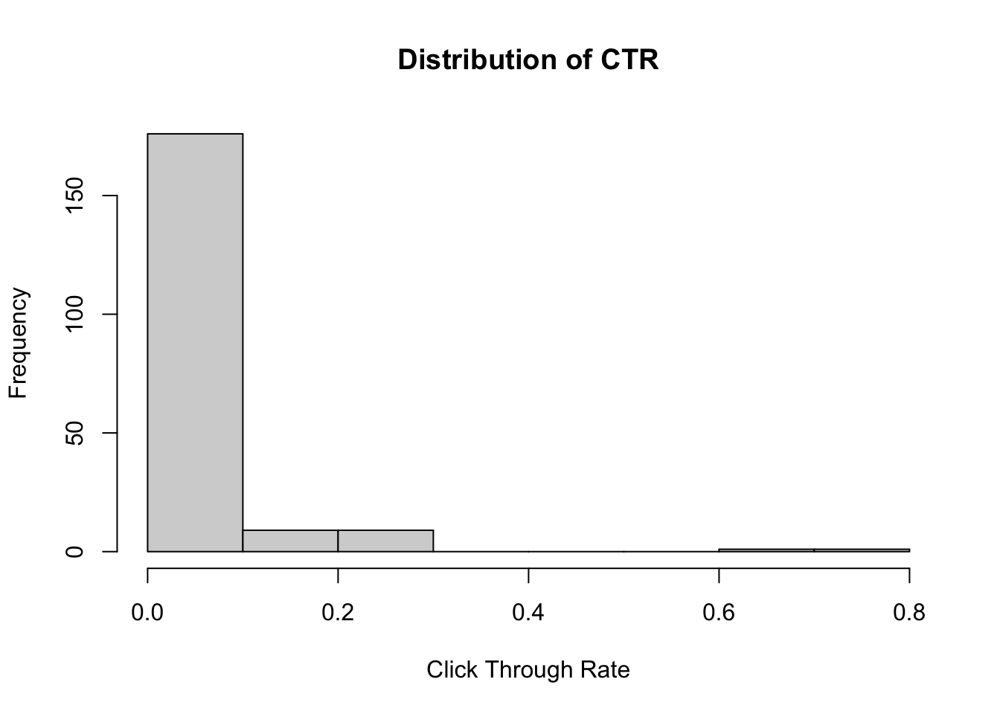
Display code
content_overview |>
ggplot(aes(x = impressions, y = click_through_rate_ctr)) +
geom_point() +
geom_smooth(method = "lm") +
labs(x = "\nImpressions", y = "Click Through Rate\n") +
theme_few()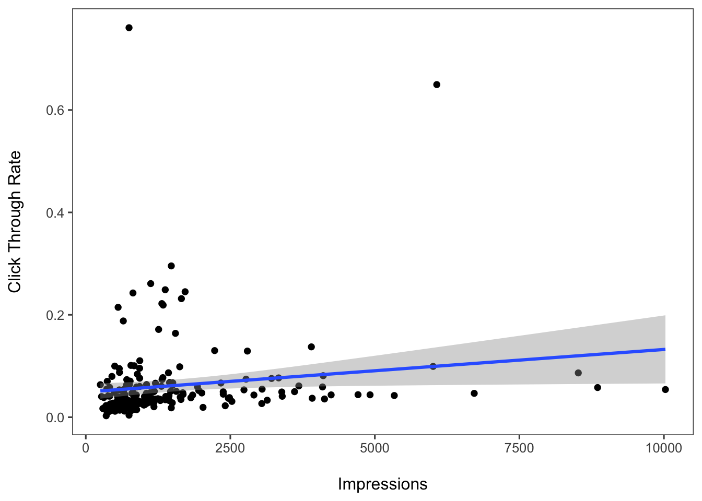
Display code
paste0("Correlation: ", cor(content_overview$impressions, content_overview$click_through_rate_ctr))[1] "Correlation: 0.151369970509074"Display code
round(quantile(x = content_overview$click_through_rate_ctr, probs = seq(0,1,.1)), digits = 2) 0% 10% 20% 30% 40% 50% 60% 70% 80% 90% 100%
0.00 0.02 0.03 0.03 0.04 0.04 0.05 0.05 0.07 0.10 0.76 Display code
click_through_no_outliers <- content_overview |>
filter(click_through_rate_ctr < 0.4)
click_through_no_outliers |>
ggplot(aes(x = impressions, y = click_through_rate_ctr)) +
geom_point() +
geom_smooth(method = "lm") +
labs(x = "\nImpressions", y = "Click Through Rate\n") +
theme_few()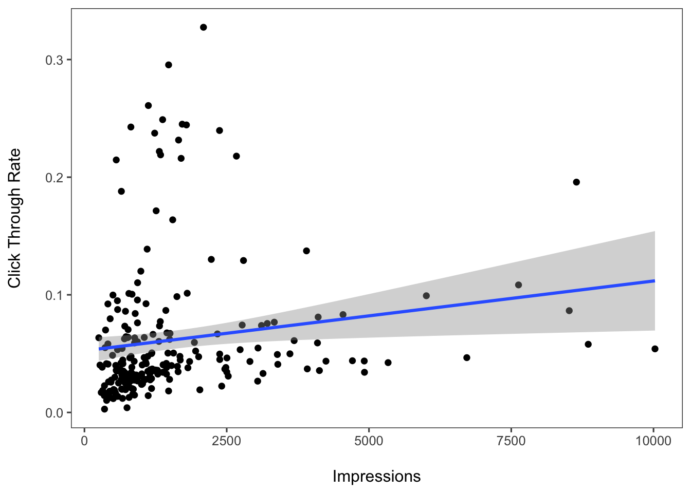
Display code
paste0("Correlation: ", cor(click_through_no_outliers$impressions, click_through_no_outliers$click_through_rate_ctr))[1] "Correlation: 0.10378425824936"